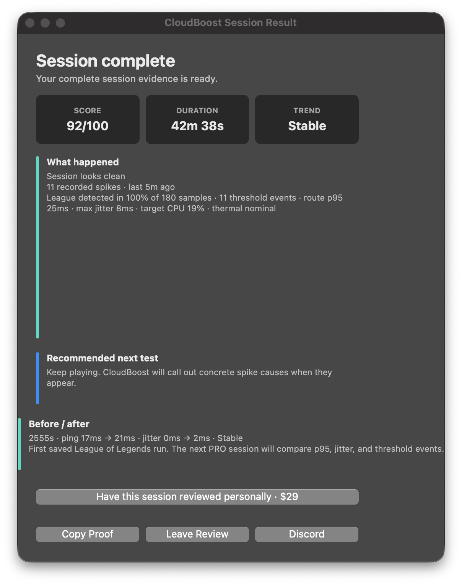
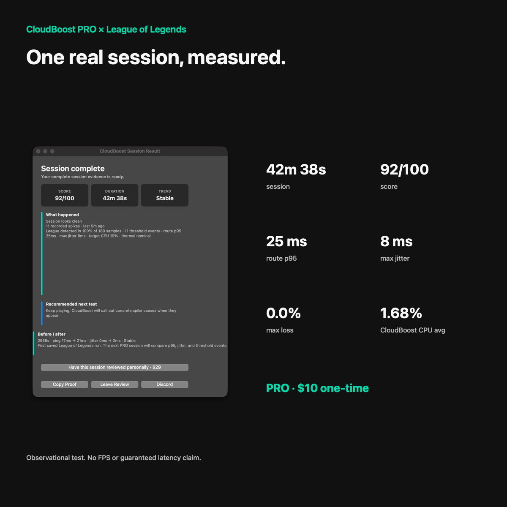

Gratis
Sesiones manuales, modo Balanced, protección de restauración, señales básicas y perfiles principales de cloud, remoto y Mac.
CloudBoost 5 · Versión preliminar · Utilidad nativa para macOS
Mira qué apps usan la red, elige qué cerrar y repite la prueba. Empieza con el monitor de tráfico gratuito de CloudBoost 5.1.
Observa jitter, pérdida de paquetes, latencia de ruta, VPN, actividad en segundo plano, Wi-Fi/AWDL, temperatura y presión local del Mac.
Prueba 3 sesiones PRO completas. Sin cuenta ni tarjeta.

CLOUDBOOST 5.1 · SESSION CENTER
CloudBoost 5.1 reúne tráfico por app, acciones elegidas por ti y orientación de pantalla en Session Center. Mira qué ocurre en el Mac y decide qué cambiar.
Todas las novedades ↗
CLOUDBOOST 5 / PRO
PRO 5 desde US$12, con pago único. Todos necesitan una nueva compra. Tu licencia anterior sigue siendo válida en la 4.x.
Tres sesiones PRO completas. Sin cuenta ni tarjeta. Las sesiones de menos de un minuto no cuentan.
Cloud, remoto y local
CloudBoost incluye perfiles para GeForce NOW, Xbox Cloud Gaming, Boosteroid, Shadow PC, Moonlight y PS Remote Play.
También incluye perfiles para League of Legends, Dota 2, Minecraft y Roblox. PRO añade Session Evidence con gráfico de latencia y jitter, p50/p95, Network Preflight, exportación PNG, Stream Bridge opcional y diagnósticos para CrossOver, Whisky, Wine y Game Porting Toolkit.
No modifica juegos, no evita sistemas anti-cheat y no promete aumentar mágicamente los FPS.
Gratis y PRO
Sesiones manuales, modo Balanced, protección de restauración, señales básicas y perfiles principales de cloud, remoto y Mac.
Automatización, HUD, Session Doctor completo, Session Evidence, Network Preflight, Stream Bridge opcional, Session Lab, informes Session Proof y soporte prioritario.
Pago único para CloudBoost 5.x en un Mac. No es una suscripción. Las transferencias se gestionan mediante soporte.
Comprar PRO en Payhip
Resultado medido
CloudBoost registró 92/100, una ruta p95 de 25 ms, jitter máximo de 8 ms y 0,0% de pérdida máxima. Una muestra independiente midió un uso medio de CPU de 1,68% para CloudBoost.
Es una prueba observacional, no una promesa de más FPS. Publicamos la captura, el método y los datos para que puedan revisarse.
Ver el resultado completoCinco plazas piloto
US$29 en total. Incluye una licencia PRO para 4.x y una revisión personal de un informe Session Proof.
Recibirás observaciones para tu Mac, red y cliente de juego, además de los próximos pasos recomendados. No prometemos reparar rutas del proveedor, servidores remotos ni problemas internos del juego.
La respuesta llega por Discord o correo en un máximo de tres días laborables después de recibir un informe completo.
Ver la oferta anterior para 4.xSoporte
El Discord está abierto para usuarios Gratis y PRO: instalación, licencias, errores, diagnósticos confusos y sugerencias.
Instala 4.4.6 manualmente una vez porque esas versiones no pueden usar las nuevas rutas de firma integrada y espejo web. Tus ajustes y la activación PRO se conservan. Abrir versión oficial.
No directamente. Se centra en la estabilidad de la sesión y en explicar problemas del lado del Mac, la red y el sistema.
Puede ayudar cuando el problema está relacionado con temperatura, modo de bajo consumo, tareas en segundo plano, Wi-Fi o presión local. No mide directamente compilación de shaders ni tiempo de renderizado.
No. No instala KEXT, servicios ocultos, parches permanentes, inyección de juegos ni bypass de anti-cheat.
Una nueva licencia PRO de Payhip se activa en un Mac y puede revalidarse normalmente en ese equipo. Si cambias de ordenador, contacta con soporte en Discord para solicitar la transferencia sin volver a comprar.

GUNBOUND GIS · Próximamente
Próximamente, un perfil comunitario independiente. Ayuda a definir los próximos pasos. Compatibilidad aún no validada; sin colaboración oficial.
Conoce el proyecto ↗